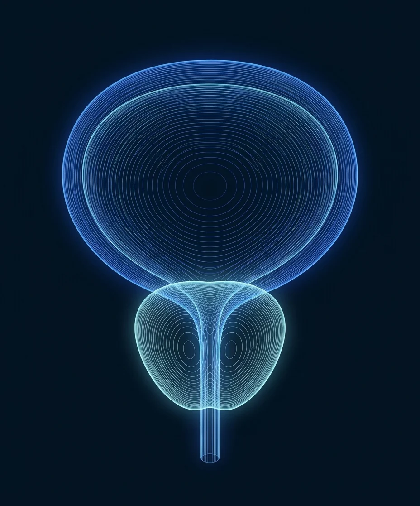
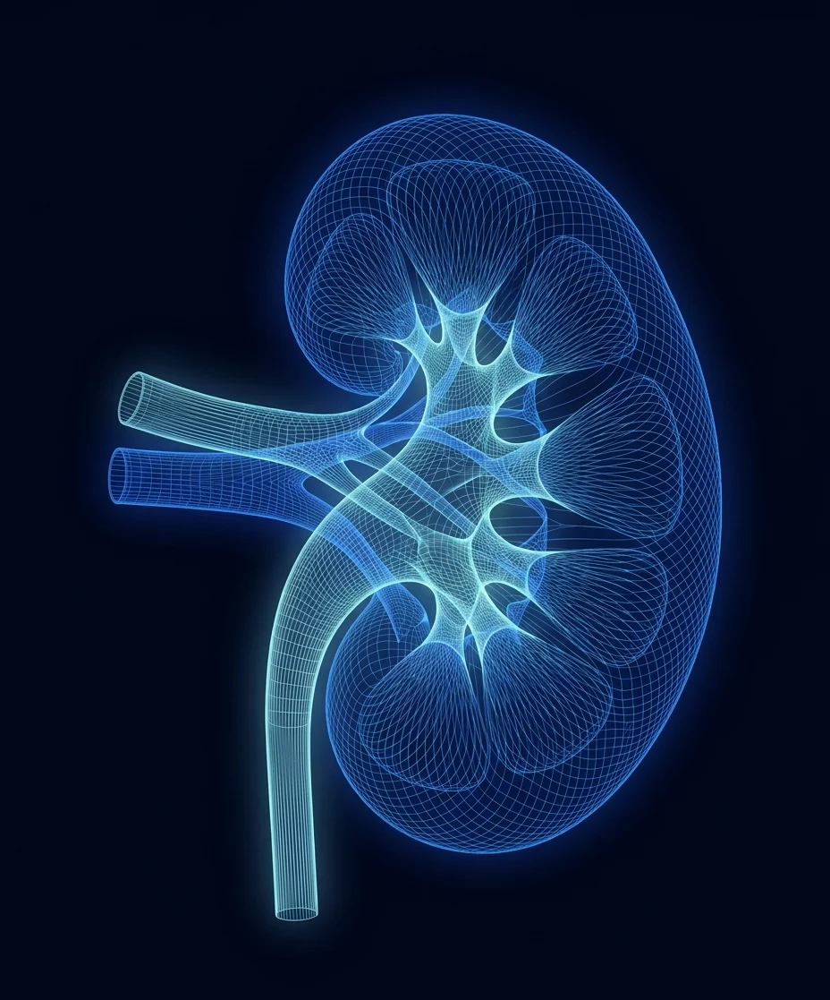
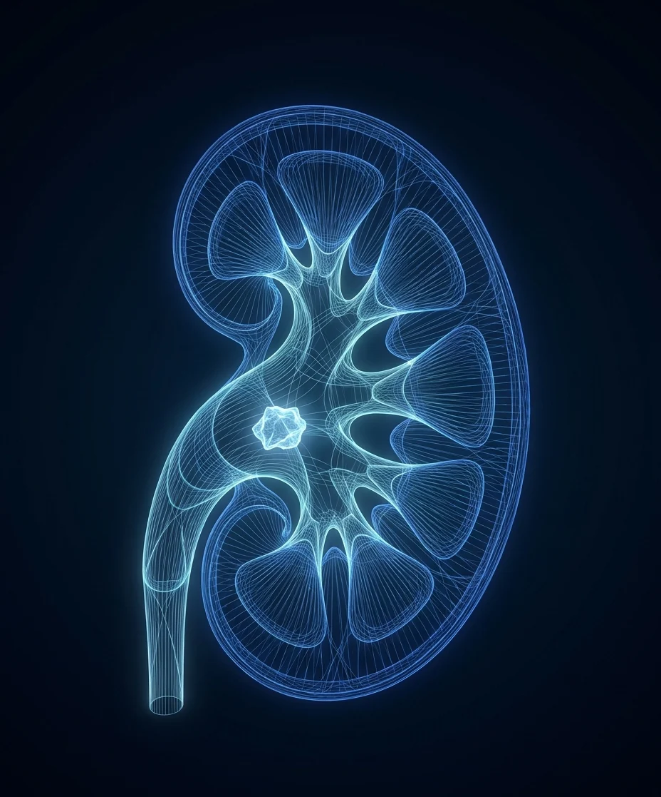
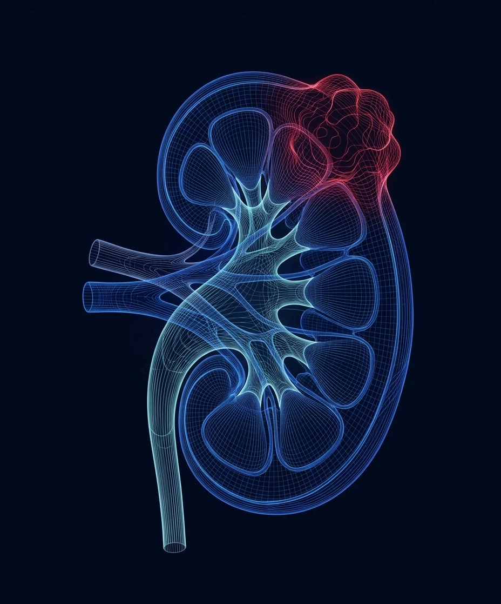
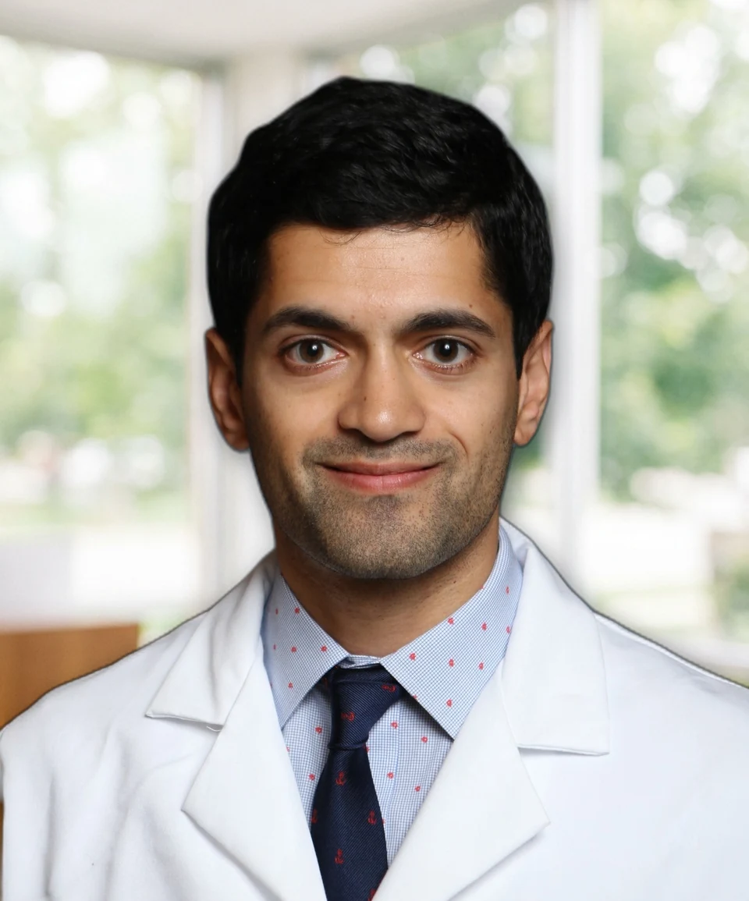

Enlarged prostate
Four modern options for BPH: urologist-led PAE, UroLift, Rezūm, and Aquablation. No incisions, minimal downtime, often no catheter.
Enlarged prostate treatment →Dr. Hari Sawkar is a board-certified urologist in Tustin and Chief of Urology at Providence St. Joseph Hospital.
Medicare and most PPO plans, no referral needed · Telehealth available

Aquablation procedures, the highest volume of any surgeon in Orange County
PAE procedures a month, in a urologist-led program
Four modern options, with no incisions and minimal downtime.
Compare all four →Da Vinci robotic-assisted prostatectomy with a precise, nerve-sparing technique.
Prostate cancer care →Lithotripsy, ureteroscopy, and laser fragmentation. Most are outpatient with same-day discharge.
Kidney stone treatment →Robotic partial nephrectomy that preserves kidney function.
Kidney cancer care →Regenerative treatments including PRP and shockwave therapy. Penile implants also available.
Men's health →In the office, no stitches, with simple all-in cash pricing.
Vasectomy details →
Four modern options for BPH: urologist-led PAE, UroLift, Rezūm, and Aquablation. No incisions, minimal downtime, often no catheter.
Enlarged prostate treatment →Da Vinci robotic-assisted prostatectomy with a precise, nerve-sparing technique for optimal recovery of function.
Prostate cancer care →
Lithotripsy, ureteroscopy, and laser stone fragmentation. Most procedures are outpatient with same-day discharge.
Kidney stone treatment →
Robotic partial nephrectomy that preserves kidney function while minimizing blood loss and recovery time.
Kidney cancer care →Regenerative treatments including PRP and low-intensity shockwave therapy. Penile implants also available.
Men's health →An in-office procedure with no stitches, minimal discomfort, and a rapid return to normal activity. Simple all-in cash pricing.
Vasectomy details →
Dr. Hari Sawkar's training began in biomedical engineering at George Washington University and was refined at Northwestern's Feinberg School of Medicine and USC urology residency. Today he is Chief of Urology at St. Joseph Hospital and, with more than 250 procedures, the highest-volume Aquablation surgeon in Orange County. He also runs a urologist-led PAE program that performs about 16 procedures a month, an approach that is uncommon in Orange County: he decides whether prostate artery embolization is right and manages everything before and after, while an interventional radiologist performs it in the practice's own lab, so men with an enlarged prostate have one urologist guiding every option.
More guides: Post-void residual·Prostate volume calculator·Flomax alternatives·Alternatives to TURP·Aquablation recovery·PAE recovery·UroLift recovery·Rezūm recovery
“[I] sleep through the night and wake up well rested and energetic.”